Internship Project
I did this projecct in my internship at LTA. This project involves webscraping data from moovit.com, preparing the data and creating an interactive bus route map using google my map for analysis and event planning.
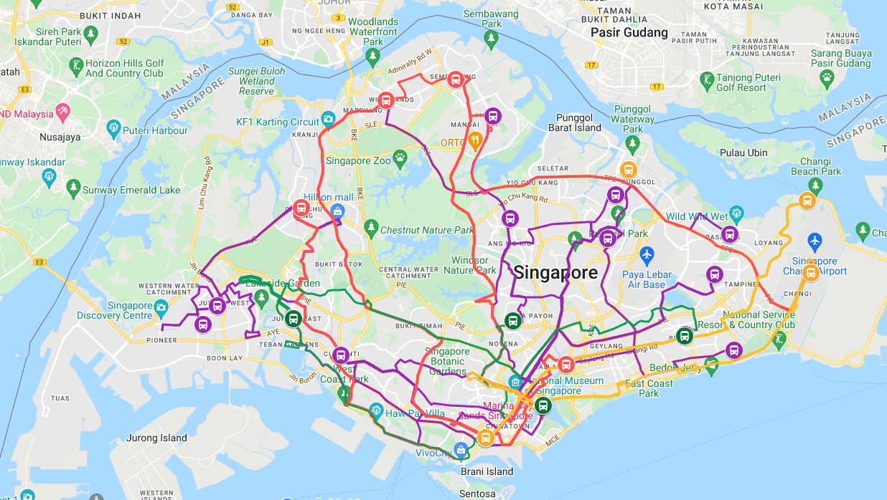
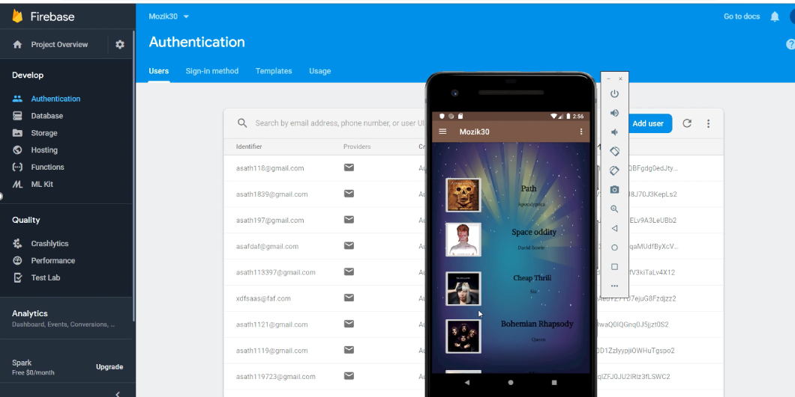
I created a music mobile app using java programming language. I used Android studio and SDK tool kit to create the appilcation. With Firebase as the authenticater, the user could register and login using his/her email and password. The App also plays music using external music library
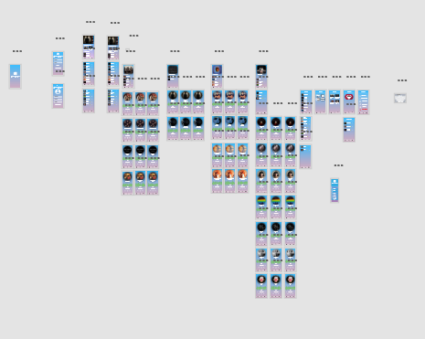
I created a mobile user interface design in this project using Adobe XD. User experince is a key component for a successful mobile app. The design was based on a combination of different music apps in google play store.
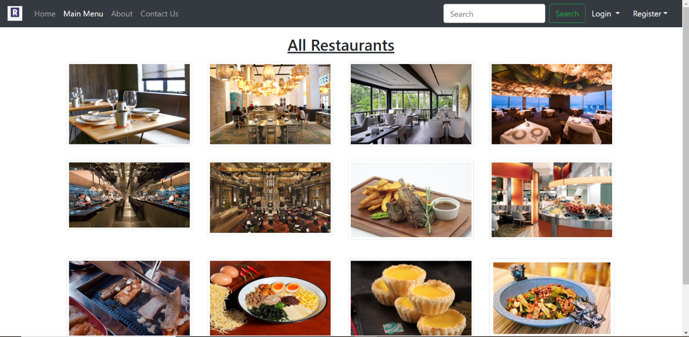
In Semester 2 , I did a website. The website was created from the base. First the database was creatd, then the html and css page was created. All of it was later connected using javascript and some php. Users could login to the website using their email and password and their information will be stored in mysql database
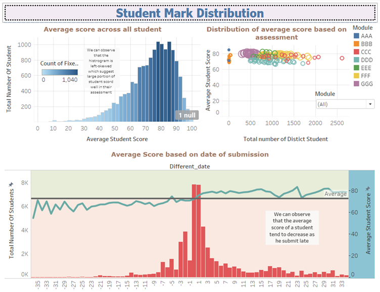
In year 2, i get to use tableau to perform data analysis and visualiation using a large dataset. The dataset contained open university students details like their exam score, their final year result, their location
, age , gender and more. I analysed the data and submit my findings in a report. Tableau has a wide collection of fantastic design feature.
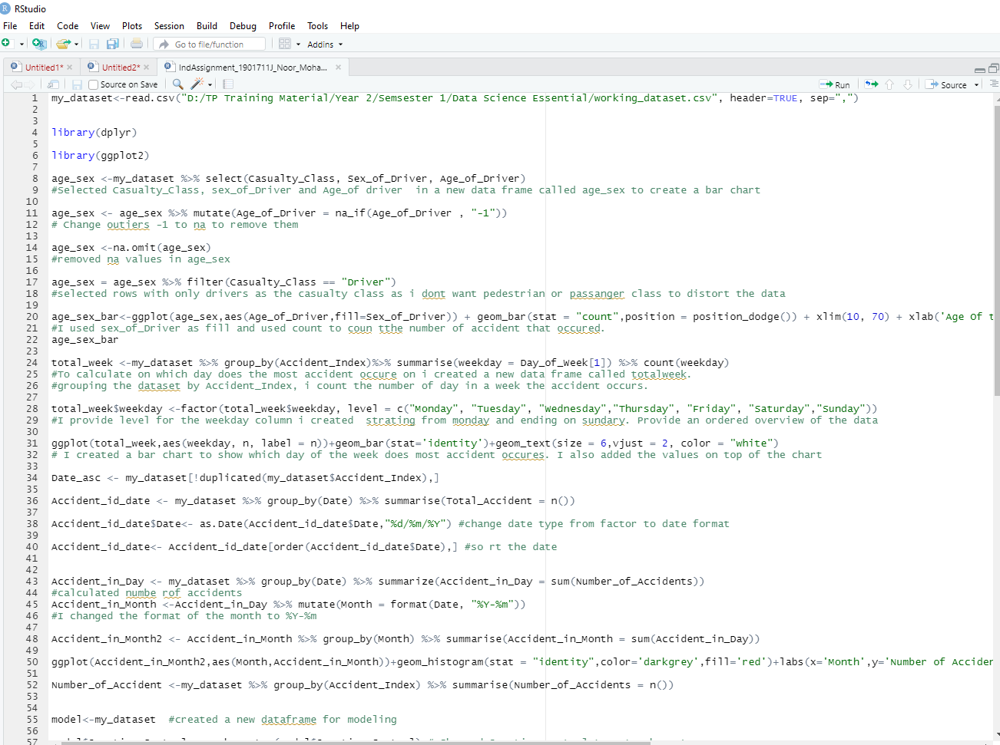
In this project, I analysed road accidents data collected over a period of five years. The problem statement is whether the circumstances of
the road condition affect the possibility of traffic accidents. R studio was used to solve the problem since the size of the data was huge. I used multiple free packages like ggplot2, dplyr , tidyvrse and more in this project
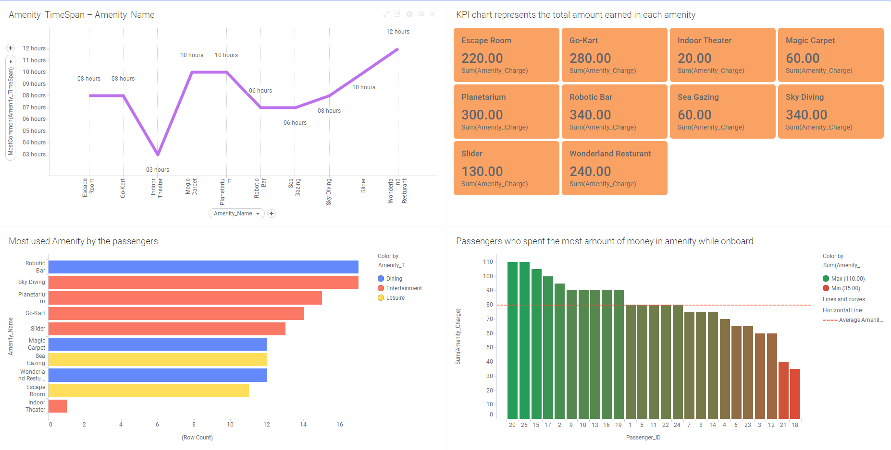
I used Tibco Spotfire software to clean, collate and visualize data from difference sources which include, MySQL database, CSV files, Data stored in cloud, data in text format etc. Tibco spotfire software has lot of functions and tools necessaary for a data analyst.
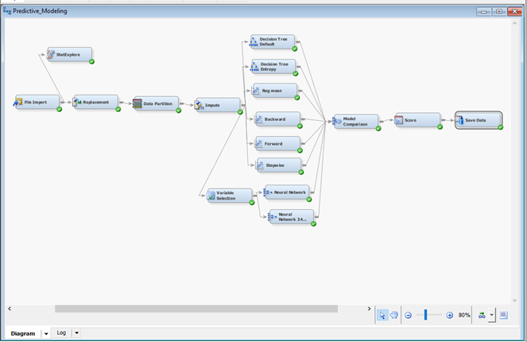
I used SAS Enterprise Miner to perform predictive analysis using AirBNB dataset. Neural Network, Decision Tree and other Machine Learning models were used to predict the popularity of an AirBNB
listings. My finding showed that the popularity of a listing is solely based on the rating a listing receive from the host
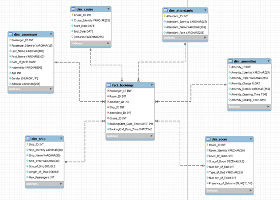
In year 2, I created a database for a for a cruise Company using MySQL. The database was in star schema. There were six dimension table and one fact table. The fact table contained the keys of all the dimension table
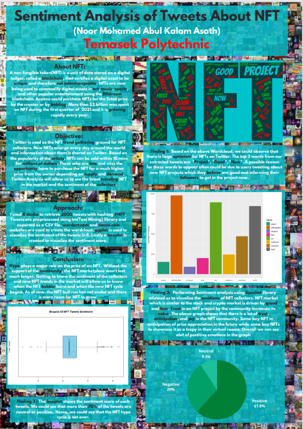
This project involves collecting tweets from twitter using API and analysing the sentiment of the user. I used NFT as a topic for this project since people were hyped up about NFT.
Analysis of the text allowed me to understand and view some of the key terms that people searched for and the sentiment associated with it. The final outcome of the project was a poster.
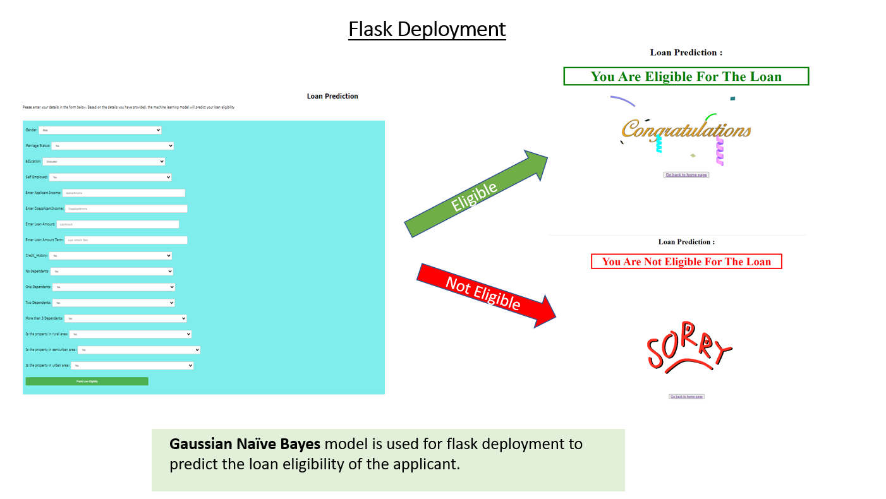
In this interesting machine learning project, i created a predictive model using python and flask. I used Gaussian Naïve Bayes which predicts the eligibility of a loan application with 98% accuracy.
Before modeling, the data was cleaned, labelled, partitioned and stadardized.
I did this power bi project by self learning on my own using free learning materials available online. Power Bi has tones of cool features and functions for data analyst like myself. Users could easily create a calculative measure with a click of a button.
The budget vs forcast dashbaord is interactive, hence users could observe valubale insights quicky and share their work with other.